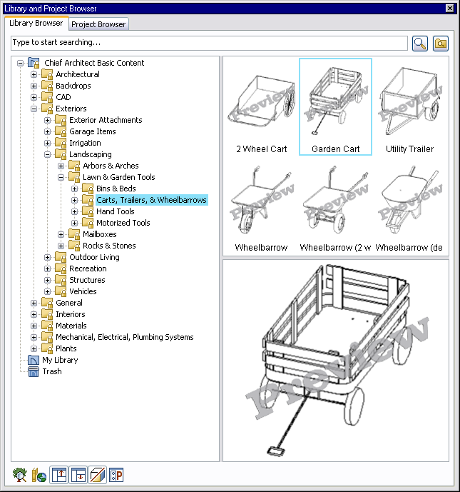
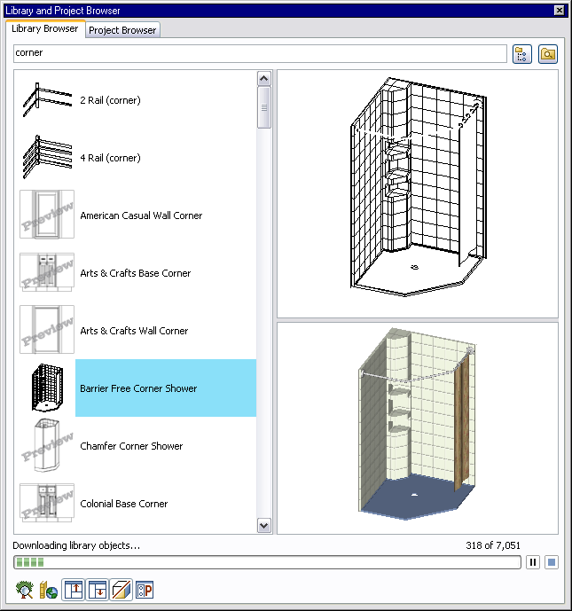
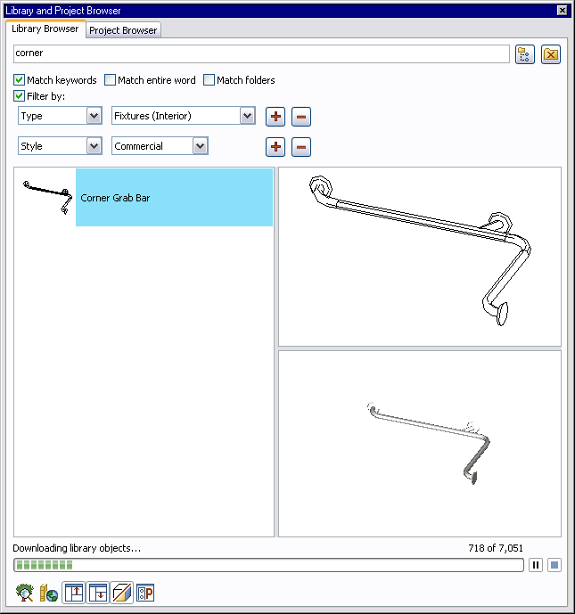
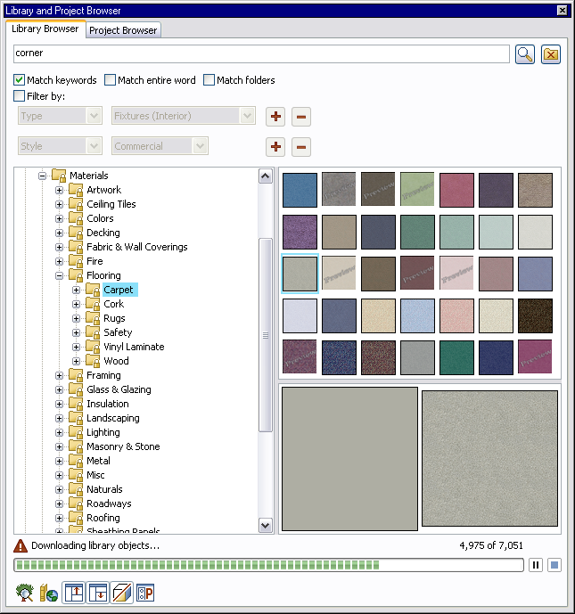
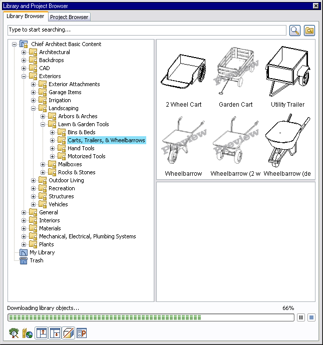

Introduction
One of the projects I worked on at Chief Architect,1 was a redesign of the Library Browser. This was the part of the software that allowed users to collect, organize, and search for the 3D models they used in their architectural drawings. Cabinets, doors, windows, furniture, electrical fixtures, and other objects, were all candidates for storage in the library. It wasn’t uncommon for users to have over 50,000 items, and the Library Browser was a part of the program they spent a great deal of time in, especially during the “painting and populating” phases of a project.
Browsing
Keep it familiar
While my long term goals for the Library Browser included an interactive iTunes style interface, I wasn’t prepared to completely overhaul the UI in a single iteration. People like it best if change is kept to a minimum. It gives them time to adjust to new things. For the X3 version of the Library Browser, I decided to integrate searching into the library directly, and provide a means for downloading library objects through RSS feeds. Everything else was going to stay the same.

The interface above is familiar to any previous user of Chief Architect’s software. It includes a tree control on the left for browsing, a thumbnail preview window to the upper right, a rendered preview window to the lower right, and toolbar buttons down at the bottom. What’s new is the search bar at the top, and the word “Preview” overlayed on top the thumbnail views.
Make it friendly
Because the search and download interfaces was going to be new, I wanted to make sure the browsing experience was as enjoyable as possible. People tend to be more open to new experiences if you make an existing experience better. I made the interface use the system selected fonts and colors, added support for multiple selection of items in the tree control, allowed for drag-n-drop reorganization, let items have shortcuts, and created a Trash where items would go when they were deleted. While these are all familiar and simple concepts in the Windows OS, they were new ideas for the Library Browser.
Little details matter
I spent a lot of time making sure every button had an informative tooltip, that the Trash showed full and empty icons when appropriate, and that the thumbnail previews were sized and spaced appropriately. While people may not consciously notice such details, subconsciously they matter, adding up to create an overall feel of a polished product.
Good design is as much about what you take out as you leave in. I removed a lot of the “information” popups that appeared in previous versions. Messages like “Object could not be placed in plan.” and “Are you sure you want to delete this item?” went away. Instead, highlights and icon changes were used indicate unusable items, and the Trash served as a failsafe against accidental deletion.
Searching
Previous versions of the Library Browser used a separate search window. It showed search results as a list, allowed you to filter them in various ways, and took you to an item in the Library Browser when you clicked on a search result. X3’s Library Browser did away with that by integrating search directly into the browsing experience.
Live search
The search bar at the top of the Library Browser was live. As soon as you started typing, it would switch over to search view and start showing you search results. The icon for the magnifying glass search button would change to a tree view to indicate you could return to a browsing view by clicking it.

Search filters
Clicking the button next to the search icon (a folder with a magnifying glass) showed you filtering options for more advanced searching. Clicking the “Filter by:” checkbox added more advanced options. You could filter by object type, style, and manufacturer. Filters could be added and removed with the plus and minus buttons. Like the text, filters were live too, so you could see the results change as you applied them. As results changed, a tooltip popped up to indicate how many results the current search returned.

From searching to browsing
If you wanted to find a searched item in the browser, you simply right clicked on it and selected “Show in Browser” from the context menu. If you unchecked the “Filter by:” box, the active filters would be disabled instead of vanishing, which made it easy to toggle filtering on and off. The filtering panel also persisted if you switched back to the browser view so you could easily toggle to and from search results.

Acquiring New Content
Early versions of Chief Architect stored library content in .alb files, a custom packed binary format. For Chief Architect X2, I’d created the notion of a .calibz file. It was a zipped SQLite database containing the 3D data for an object plus all the textures that object used. For Chief Architect X3, I extended that notion by allowing users to export a collection of library objects as a RSS feed and a set of .calibz files. This moved library content online, allowing it to be created, updated, and shared by anyone with an internet connection.
Previewing objects
When viewed in the Library Browser, objects that hadn’t been downloaded would show up with the word “Preview” stamped across a prerendered image. Right clicking on an object or folder and selecting “Download” from the context menu triggered a background download of the object.

Controlling downloads
During a download, a progress bar with pause/resume and stop buttons appeared at the bottom of the library browser. You could download multiple items, and each would get its own progress bar. This meant you could start one download of a big catalog, then continue to browse the library downloading objects on an as needed basis. Additionally, if you went to use an object that hand’t been downloaded, a download of that object would start automatically.
More little details
Clicking the download progress bar caused the textual progress indicator to cycle through three states: percentage, x of y, and hidden. If an error occurred during download, a warning icon appeared above the progress bar. Clicking the icon would show you a report indicating what went wrong. As objects downloaded, notification messages were posted back to the main thread, so the Library Browser could update previews and icons.
Post-mortem
Looking back, and reflecting on user feedback after X3 was released, it wasn’t the integrated live search or RSS download features the excited people the most. It was the little things: respect for system colors, tooltips on buttons, the trash can, multiple selection, drag-n-drop reorganization. That surprised me, because those weren’t big ticket features.
But maybe that’s what good design is, the summation of a bunch of little decisions.